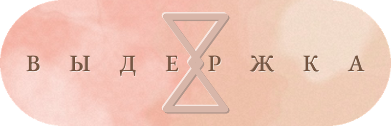
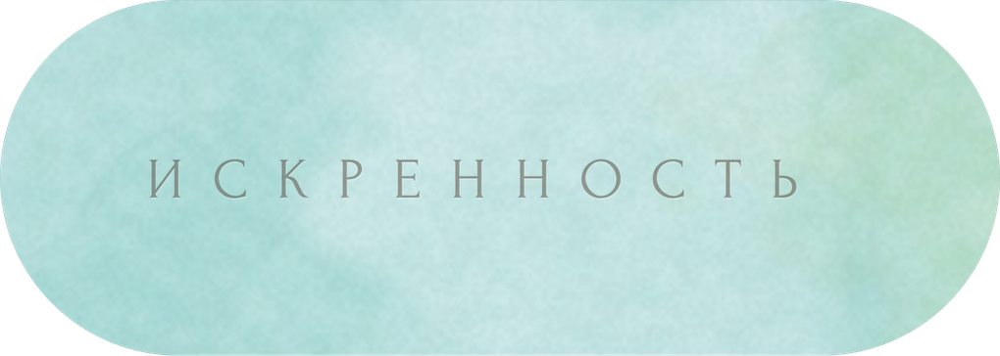
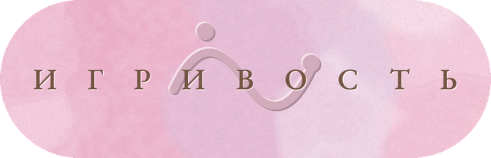
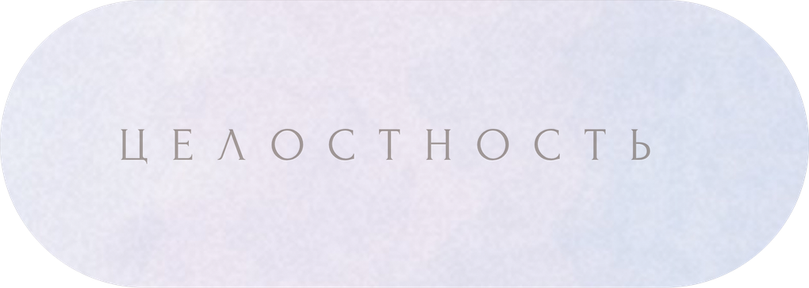
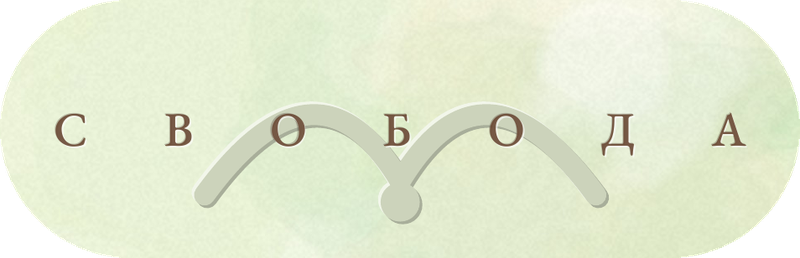
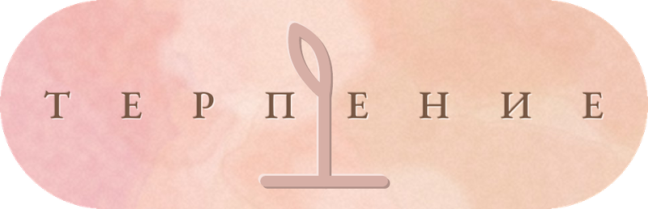
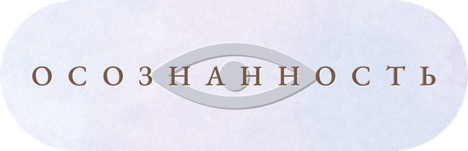

33 карты 85 × 30 мм, акварельный принт: у каждой карты своё пятно, двух одинаковых нет. Слово вдавлено в бумагу — без краски, его находишь пальцем. На обороте одна строка — с чего начать.
Сначала попробовать — одна карта в день в telegram




карты 85 × 30 мм, по одному состоянию на каждой
акварельный принт по плотной белой бумаге. У каждой карты своё пятно
слово вдавлено в бумагу без краски — его видно на свет и находишь пальцем
коробка-слайдер, вкладыш с номером экземпляра и кодом доступа
Тираж закрыт на 100 экземплярах. Допечатки первого тиража не будет.


Печать по белой бумаге: акварельное пятно у каждой карты своё, две одинаковых не найти. Мягкий, светлый тон — ближе к открытке, чем к визитке.

Слово не напечатано, а высечено: краски нет, только углубление в бумаге. На свет читается тенью по верхней кромке, в руке — находится пальцем.
Ниже — одно состояние из тридцати трёх, целиком, как оно есть на сайте и в наборе. Прочитайте и решите сами.
Ещё 32 состояния →говорить как есть
В слове «искренний» спрятаны значения «ближний», «родной». Быть искренним — значит подпустить человека на ту дистанцию, на какой держат своих, убрать щиты. Это короткая вспышка правды, идущая прямо от сердца, «горячее» слово без обмана. Полная противоположность искренности — лицемерие. Искренний человек однослоен: что у него снаружи, то и внутри, между лицом и сердцем нет зазора. Лицемер многослоен: снаружи улыбка, под ней расчёт, и одно прикрывает другое.
Искренность всегда требует смелости. Открываясь, человек снимает броню и делается уязвимым: он показывает свои настоящие чувства и тем самым даёт другому возможность ударить по больному. Поэтому искренность — это и высшая форма доверия: я открываюсь тебе, заранее зная, что этим можно воспользоваться.
Искренность — как прозрачное окно, сквозь которое видно, что делается внутри дома, в душе. Стоит стеклу искривиться или покрыться краской — ложью или просто гладким этикетом, — и картинка искажается, внутрь уже не заглянуть. Быть искренним — значит не замазывать своих трещин и шероховатостей, не наводить глянец, чтобы подороже себя продать, а показывать себя как есть.
Искренность — это прямое, неискажённое выражение того, что ты чувствуешь и думаешь сейчас, без второго дна и без маски, когда сказанное и пережитое — одно и то же. Это отказ от притворства даже тогда, когда правда выходит неудобной или некрасивой. Стоит это дорого — зато только так один человек оказывается по-настоящему близок другому.
Утром вытягиваете одну карту и оставляете её на виду. Весь день смотрите на происходящее через это состояние. Вечером — короткая проверка: где оно было, где его не хватило.
Перед сложным разговором выбираете состояние осознанно, а не случайно. Кладёте карту рядом. Она не советует, что сказать, — она напоминает, из чего говорить.
Раскладываете три карты: как есть сейчас, чего не хватает, что мешает. Работает как словарь для того, что обычно остаётся без названия.
Купила, когда было тяжело, и честно не ждала многого. А они помогли. Не как таблетка — просто каждое утро было с чего начать, одно слово, и уже не пусто.
Прошло больше года, часть карт так и живёт у меня на столе. Две — в обложке паспорта. Казалось бы, что там: слово на бумажке. Но до сих пор пользуюсь.
Скажу как есть: большую часть времени это просто красивая штука, стоит на полке как аксессуар. А потом наступает момент, когда реально вытаскивает. Ради таких моментов и держу.
Отзывы из переписок, пересказаны своими словами и с разрешения.
Пишете в telegram, называете адрес. Отправка в течение трёх рабочих дней, СДЭК и Почта России по РФ, международная отправка по запросу.
Бот даёт одну случайную карту в сутки — этого хватает, чтобы понять язык. Набор даёт предмет, все тридцать три состояния сразу и возможность выбрать нужное, а не ждать выпадения.
Он открывает в боте ручной выбор состояния и личный архив: что выпадало, когда, что вы записали рядом. Лимит одной карты в день при этом остаётся — это часть практики.
85 × 30 мм — формат закладки. Карта дня встаёт в книгу, в карман рубашки, под клавиатуру. Колода целиком помещается в ладонь и носится с собой без коробки.
Первого тиража — нет. Нумерация от 1 до 100 закрывается вместе с ним. Второе издание, если оно случится, будет отличаться бумагой и составом.
Нет. Ни предсказаний, ни значений «в перевёрнутом положении». Тридцать три состояния с определениями, этимологией и различением от соседних понятий. Ближе к словарю, чем к гаданию.
Да, и это половина заказов. В сообщении к заказу можно попросить оставить вкладыш неподписанным или указать имя получателя.
Сначала попробовать — одна карта в день в telegram